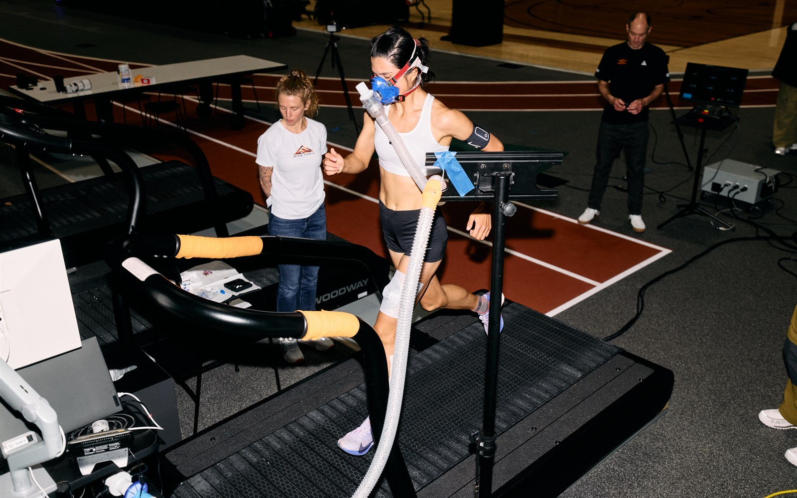
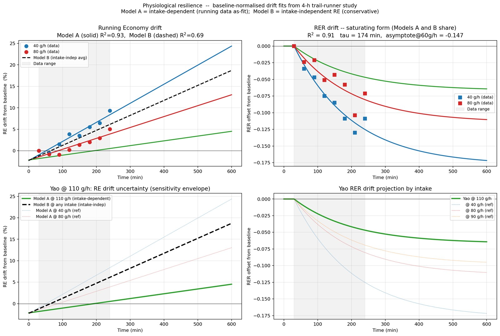
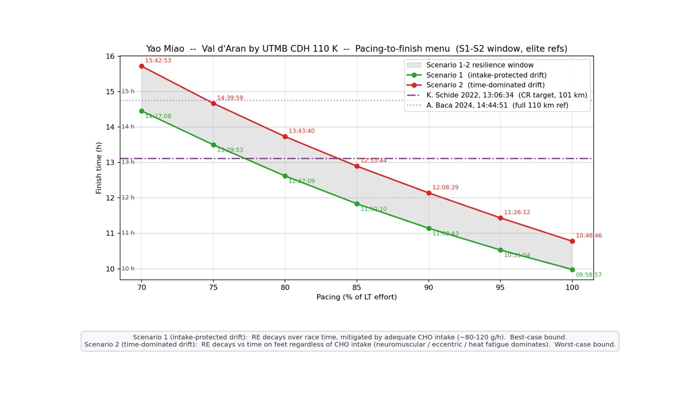
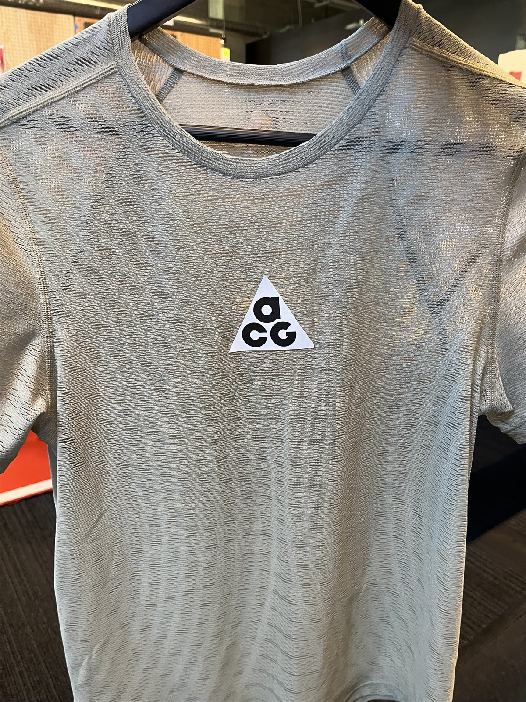
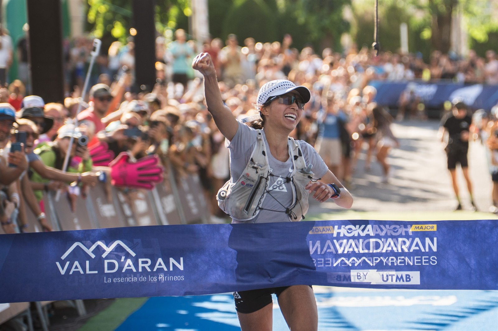

The athlete: Yao Miao. Chinese trail runner from Guizhou Province, known back home as China's "Queen of Trail Running," and the newest name on Nike's ACG All Conditions Racing Department.
The race: the Camins d'Hèr (CDH) at HOKA Val d'Aran by UTMB. A specific mountain — 110 km, 6,400 m of vertical, 12 segments, one hot Pyrenean afternoon.
The ask was simple to say and hard to answer: build a race-day plan — pacing, fueling, apparel, cooling — that lets one athlete run at the ceiling of her physiology without going through it. Underneath every segment, the one variable that behaves differently from all the others: how she is still going after 12 hours on her feet.
One thing separates the ultra-endurance athlete from every shorter-distance runner: physiological resilience — the ability to resist functional decline under acute and chronic stressors. Everyone slows down over 13 hours. The winner is the one who slows least.
Here is the dilemma: truly measuring an individual athlete's resilience would require running an instrumented ultra — sensors, gas analyzers, blood samples, and all — in real race conditions. That is not a thing you can ask an athlete to do. And race data alone isn't a shortcut, because the timing splits don't come with the metabolic instrumentation attached.
Without a resilience cofactor tuned to something real, a race-day performance model becomes a well-dressed guess. And guesses are what elite athletes cannot afford at the finish line.
In the months before Yao's visit, the Nike Innovation Farm Team — a program at Nike World Headquarters that runs elite-level athletes through structured protocols — had already put in the work on two problems that any 100-kilometer race plan would need answers to.
On April 7, 2026, Yao arrived at PHK in Beaverton, Oregon. In the space of a day she moved through four sessions:
The three apparel + product sessions were feedback loops. The Speed × Grade test was the data engine.
Sum them up and run the math backward. Pick a target finish time. Solve for the fractional effort she'd need to hold to arrive there. Translate that fractional effort into a specific per-segment prescription — average heart rate, average pace, average vertical rate on the climbs. An inverse-solve race-day model that reads out as instructions she can follow on the trail.

With the model built, one chart shows the entire coaching decision. Pacing on the horizontal. Finish time on the vertical. Two curves — best case and worst case for resilience — and the elite reference lines to anchor context.

A single chart. A single decision. The whole night's worth of coaching debate compressed into one line the coach could point at.
At approximately 80% LT effort — the coach's chosen intensity band for the first 6 hours — the model predicted a finish between 12:37 (best case) and 13:44 (worst case). She crossed the arch in Vielha at 13:04:34. Inside the window. First woman of 83. Eighth overall of 859.
Between the April lab visit and race day, the API team held three working sessions with Yao and her team. Each one narrowed the field from "what the science says" to "what to do on Friday."
One more decision remained — one the plan set up but Yao alone would make: what to wear on race morning.
The Farm Team had already done the hard part — putting the newest Nike Innovation apparel prototypes through climate-chamber tests and on-trail wear tests. Yao's job was to try on the results and pick. On race morning, she pulled two Nike Innovation garments out of the pile: the Flyweb Bra — the 3D-printed, seamless TPU sports bra Faith Kipyegon wore for Breaking4 — and the Nike NXT% Dri-Fit prototype, the same top she had tested in the climate chamber. Both aimed at the same target: maximize sweat efficiency, minimize thermal burden, delay time to dehydration.
The Radical AirFlow long-sleeve was also on the table. On the day, in her judgment, the NXT% Dri-Fit + Flyweb Bra combo was the better fit for the race she wanted to run. She wore that combo for 110 kilometers of Pyrenean climb, plunge, and finish.

Reference: Nike Flyweb · Nike Radical AirFlow
With the kit chosen, the last artifact of the handoff was the one that would live in the coach's pocket. Twelve segment cards, six aid-station cards — each one distilled the model's per-segment prescription into a few lines a coach could hand Yao at an aid station and she could carry in her pocket. Here is one card: Segment 11 — the final wall. Hundred-kilometer races are usually decided at the point where you already have 96 km on your legs, and on the CDH that is the climb from Arties to Escunhau, in the hottest part of the afternoon.
Every card had the same shape: the numbers to hit, the cooling cues, the technique reminders, and the mental frame. Twelve segments. Six aid stations. One race plan in the coach's pocket.
Kit on. Cards clipped to the coach's belt. Yao started at 06:00 from Les. She climbed the queen (16 km, +1,036 m to Coth de Varradòs) inside the plan. She rode the two "trap" segments at the intensity the cards prescribed. She reset thermally at Colomers refuge. She dropped through the plunge to Arties without wasting the eccentric budget. And then she climbed the final wall.
She crossed in Vielha at 19:04 local. Right fist punched high, mid-shout, through the VAL D'ARAN tape into a corridor of cheering strangers.

In the days after the race, Yao posted her own take on the day. She has a habit of putting the process ahead of the result — and, in her Instagram note, she named exactly the thing the model tried to give her.
The cue cards were explicit about eyewear. Six touchpoints, from the pre-dawn start to peak afternoon:
LES start — "Cap in pack, sunglasses in pack."
Queen climb, HON → VAR — "at 2000 m she'll be in direct sun by 08:30; sunglasses."
MTG plateau, UV window — "cap on, glasses on."
MTG aid station — "Cap + sunglasses ON before she leaves."
BER → SAL red flag — "Squinting / no glasses → UV strain in a 13 h day is real."
ART last-full-aid — "Sunglasses staying on — valley sun still peak."
On race morning, Yao's sunglasses got dust on them early. Rather than stop and lose time, she ran the first 60 km without.
Her eyes recovered fully. The lesson didn't need to. That's what training races are for: find the problems, and solve them. Next time out, the cue cards get an eyewear discipline line — not just an eyewear presence line — and the pre-race kit review lays it on top of the "no compromise" pile.
The Nike Sport Research Lab does its most important work years before the athlete arrives. Physiological resilience gets a formal definition. A cohort of Nike Innovation Farm Team athletes maps how the engine decays across four hours of running under different fuel intakes and different footwear. A Dri-Fit concept passes climate-chamber tests and comes back with better sweat-management numbers.
Those aren't separate projects. They are the same investment, made in advance, sitting on the shelf.
And when a Nike athlete like Yao Miao walks into the LeBron James Innovation Center, the Applied Performance Innovation team's job is to pull the right pieces off that shelf, combine them with the athlete's own physiology, and hand back a race-day plan — and the cue cards that carry it — before she gets on the plane.
One 13:04:34 finish at the CDH is the visible payoff. The invisible payoff is a pipeline that is now ready for the next Nike athlete, the next race, the next season. That is how Nike Innovation compounds.